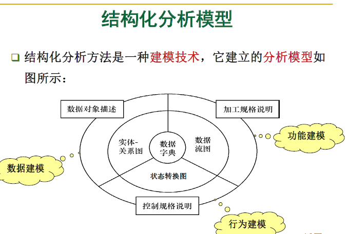

一.文档作用：
- 提高开发能见度。
- 记录开发过程的有关信息，便于使用维护。
- 作为开发人员阶段工作成果、结束标志。
- 提高开发效率。
- 提供软件运行、维护、培训有关资料。
- 便于用户了解功能和性能。
软件危机的定义和表现：
软件危机是指在计算机软件的开发和维护过程中所遇到的一系列严重问题。软件的发展速度远远滞后于硬件的发展速度，不能满足社会日益增长的软件需求，软件开发效率低（开发周期长）、成本高、质量差、维护困难。
表现：项目超出预算、项目超过计划完成时间、运行效率低下、质量差、不符合要求、项目难以管理并且代码难以维护、软件不能交付。
二.
- 瀑布模型特点
- 阶段间具有顺序性和依赖性。
- 推迟实现的观点
- 质量保证的观点
每个阶段必须完成规定的文档，没有交出合格的文档就是没有完成该阶段的任务。
每个阶段结束前都要对所完成的文档进行评审，以便尽早发现、改正错误。
- 瀑布模型缺点：
- 不够灵活，在下一阶段开始之前，当前阶段的结果需要固定下来，这个条件非常严格。
- 整体性太强。开发计划是面向单一交付日期制定的，在分析阶段出现的任何错误，都只能在软件交付给用户后才能发现。若没有正确理解用户需求，或者在设计、编码和测试阶段需求发生改变，则瀑布模型将导致软件产品的不合格（增加了开发的风险）
- 瀑布模型是严格的文档驱动的，比较繁琐。
- 在软件开发的早期就需要投入大量的成本，使得它难以应对客户需求的变更。
- 现在常用快速原型。
- 工具不是过程模型。
- 增量模型、螺旋模型：非整体的迭代的开发方式。
- 增量模型、螺旋模型不同点：
- 两者迭代层次不同：
- 增量：活动级。
- 螺旋：过程级。
- 需求分析时间不同：
- 增量：先整体分析设计再编码测试。
- 螺旋：在开发周期采用瀑布模型。
- 两者交互软件的方式不同
- 增量：每次开发都是上一次基础上提交新的一部分软件。
- 螺旋：每次迭代都提交一个新的完整的软件版本。
- 两者减小风险的方式不同
- 增量：通过避免使用不成熟的技术和经常的客户反馈等方法来减少风险。
- 螺旋：直接引入风险分析。
三.需求分析
- 结构化分析模型的三种模型对应关系。
数据建模：实体-关系图（E-R图）
功能建模：数据流图（DFD）
行为建模：状态转换图（STD）

- 数据流图 四中符号名字。 加工、外部实体、数据存储、数据流。
- UML图 各图的名字：
类图、用例图、交互图、状态图、活动图、实现图。部署图也是UML。
- 用例图 要会画。

- 需求分析四个阶段 名字记住。
需求获取、需求分析、需求定义、需求验证。
四.软件设计
- 七种内聚 ：功能内聚、顺序内聚、通信内聚、过程内聚、时间内聚、逻辑内聚、巧合内聚。（由高到低）
七种耦合：非直接耦合、数据耦合、标记耦合、控制耦合、外部耦合、公共耦合、内容耦合。（由低到高）
- 如果一个程序的代码块仅仅通过顺序、选择和循环 这三种基本控制结构进行连接，并且每个代码块只 有一个入口和一个出口，则称这个程序是结构化的
- 流程图的缺点。
- 程序流程图从本质上来说不是逐步求精的好工具，它容易使程序员过早地考虑程序的控制流程，而不去考虑程序的全局结构。
- 程序流程图中用箭头代表控制流，程序员可以不顾结构程序设计的精神，随意转移控制，而使程序结构过于混乱。
- 程序流程图在表示数据结构方面存在不足。
- 模块化和软件成本的关系。

高内聚、低耦合的模块独立性强。
五.
- 白盒 黑盒 生产力度量
- 直接测量：基于代码行数的度量
简介测量：基于工程点的度量
- 直接度量的优缺点。
优点
- LOC、KLOC和相关度量容易计算
- 许多现有的软件估算模型都使用LOC和KLOC作为一项重要输入
- 有大量的关于LOC的参考文献和数据
缺点
- LOC依赖于使用的语言，这对短小精悍的程序不利
- 不太适用于非过程化语言
- LOC只有在设计完成时候才能计算，同时估算需要一定程度的细节，而这些细节可能很难获得。项目计划人员很难在分析和设计完成之前估算LOC
六.软件测试
- 测试目标 7条
- 确认系统满足其预期的使用和用户的需要
- 确认解决了所需解决的问题（如实现商业规则和使用合适的系统假定）
- 为测试的过程建立责任和可解释性
- 便于及早发现软件和系统的异常
- 及早提供软件和系统的性能的评估
- 为管理提供真实信息，以决定在当前状态下发布产品在商业上的风险
- 鉴别出程序在功能等方面的异常集聚之处
- 软件缺陷 什么情况算缺陷。
- 软件未实现产品说明书要求的功能
- 软件出现了产品说明书指明不能出现的错误
- 软件实现了产品说明书未提到的功能
- 软件未实现产品说明书虽未明确提及但应该实现的目标
- 软件难以理解、不易使用、运行缓慢或者——从测试员的角度看——最终用户会认为不好
- 静态测试
三种方式（三个表示）：同事审查、走查、审查。
会议评审也是。
- 驱动模块：用来调用被测试模块。
桩模块：用来代替被测试模块调用的模块。
- 测试用例
定义：测试用例（Test Case）是测试输入、执行条件，以及预期结果的集合，是为特定的目的开发的，例如执行特定的程序路径或验证与指定的需求相符合
- 覆盖率 不可能100%
定义：给定一个测试需求集合TR和一个测试集合T，覆盖率可以定义为T满足的测试需求占TR 总数的比例。
- 白盒 最少的用例。黑盒 基本路径测试。
- 101页 四种测试目的。
单元测试：验证软件模块是否按详细设计的规格说明正确运行。
集成测试：检查多个模块间是否按照概要设计说明的方式协同工作
系统测试：验证整个系统是否满足需求规格说明。
验收测试：从用户的角度检查系统是否满足合同上中定义的需求，以及确认产品是否能符合业务上的需要。
- 集成测试 三种方法
自顶向下、自底向下、smoke
- 回归测试 用来测试改动过的地方。
- 压力测试 方法 书上例子。
采用比平常限度约高一个数量级的反常数量、频率或容量进行测试用例的设计
例如，正常情况下平均每秒出现1~2次中断，可以设计“每秒出现10次中断”的测试用例。
- 验收测试的关键点111页。
系统测试是在开发环境下进行的，而验收测试是在客户的真实操作环境下执行的。关注点是客户的观点和判断。
- α β 测试 。
七.项目管理
- 管理四大要素 ：人员、产品、过程、项目。4P
- 在策划一个项目前，应当建立产品的目标和范围，应考虑其他解决方法，以及约束技术和管理。没有这些信息，则无法准确的界定费用、进行有效风险评估或提供有意义的进度估计。
- 5个等级 P-CMM
初始级、管理级、定义级、可预测级、优化级
- 3种团队组织形式 软件能很好模块化用CC、CD，程度不高用DD。
民主分权制（DD）：该软件工程团队没有永久的领导者
有控制的分权制（CD）：该软件工程团队有领导协调具体任务，也有负责子任务的次要领导人。
有控制的集中制（CC）：团队内部问题的解决和协调是由一个团队的领导者来管理的
- 虚拟团队（也称为地理上分散的团队或GDT）是跨越时间、空间和组织界限，运用通信技术加强连接的队伍。
虚拟团队的优势：提高生产力，扩大市场机遇，进行知识转移
虚拟团队的缺点：沟通不足，领导不力，团队成员不称职
- 问题分解 有助于更准确地定义软件范围（从而也就能够制定更准确的项目计划）
- 软件项目计划的目的是使项目经理能够对资源、成本及时间进行合理的估算，一般是在项目开始时进行，随着项目进展定期更新。
八.软件维护
- 软件维护是指由于软件产品出现问题或需要改进而对代码及相关文档的修改，其目的是对现有软件产品进行修改的同时保持其完整性。
软件维护是生命周期中的一个主要阶段。
- 四种维护。
纠错性维护21%，适应性维护25%，完善性维护50%，预防性维护4%
维护占总成本50%以上。
- 软件维护的困难
- 配置管理工作不到位
- 人员变动造成的影响
- 维护人员大多不是编写代码的人
- 任务急、时间紧的情况下处理维护请求
- 软件维护的必要性七点
- 软件维护能够改正错误
- 软件维护能够改善设计
- 软件维护能够实现软件的改进(Implement enhancements)
- 软件维护能够与其他系统进行交互
- 软件维护能够为使用不同的硬件、软件、系统的新性能以及通讯设备等而对软件进行改进
- 软件维护能够完成遗留程序的移植
- 软件退出使用
九.Java
- jdk目录
- \bin目录：Java开发工具，包括Java编译器、解释器等
- \demo目录：一些实例程序
- \lib目录：Java开发类库
- \jre目录：Java运行环境，包括Java虚拟机、运行类库等
- import设定 引入包的声明，用于导入外部的类— 0~多个
- 构造方法 可以重载 。
一种和类同名的特殊方法
用来初始化对象
- 运算符优先级。

- swtich语句。
- 变量又叫属性。
- 判断题非原则性错误都算对。